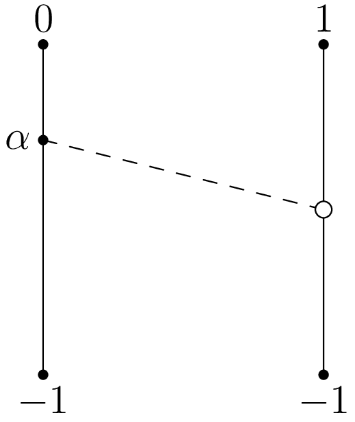
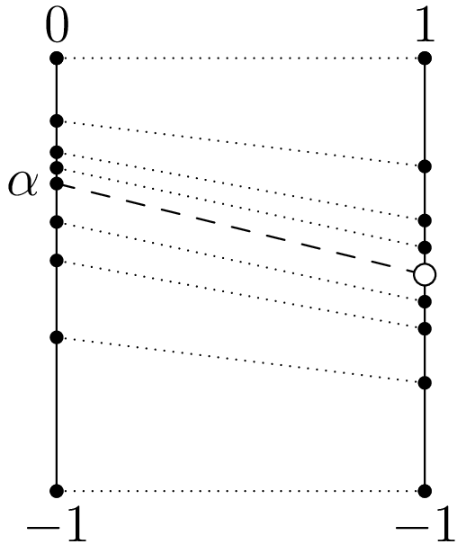

May 16th
Today I learned how to create an order-preserving bijection from $\QQ$ into $\QQ\setminus\{0\},$ which is the back-and-forth trick. We are building towards the following.
Proposition. There exists a bijection $\varphi:\QQ\to(\QQ\setminus\{0\})$ such that $a\le b$ implies $\varphi(a)\le\varphi(b).$
What we would like to do is send $\varphi:x\mapsto x,$ but of course this doesn't work because $0$ doesn't have a home. So the question we're interested in is where $0$ should go. It doesn't really matter where we send it, but it has to go somewhere, so we set\[\varphi(0):=1.\]While we're at it, the values $x\ge0$ aren't going to give us problems, so we'll just set\[\varphi(x):=x+1\quad\text{for }x\ge0.\]The above means that $\varphi$ takes $[0,\infty)\cap\QQ$ to $[1,\infty)\cap\QQ$ in a bijective (inverse is subtract by $1$) in an order-preserving way ($a\le b$ implies $a+1\le b+1$).
It remains to extend $\varphi$ to biject $(-\infty,0)\cap\QQ$ to $(-\infty,1)\cap\QQ\setminus\{0\}.$ (We don't have to worry about splicing together breaking order-preservation because we are sending the larger values to larger values and vice versa in the splice; I won't be riogorous about this.) We would like to put a bottom on this, so we'll just set\[\varphi(x):=x\quad\text{for }x\le-1.\]The identity here will provide an order-preserving bijection from $(-\infty,-1]\cap\QQ$ to $(-\infty,-1]\cap\QQ.$
So now we have to provide an order-preserving bijection from $(-1,0)\cap\QQ$ to $(-1,1)\cap\QQ\setminus\{0\}.$ Now, the main idea is that there is a "natural'' order-preserving bijection from $(-1,0)\cap\QQ$ to $(-1,1)\cap\QQ$ by $x\mapsto2x+1.$ The question, then, is what to do with $-\frac12.$ Well, just like with $0,$ we can send $-\frac12$ somewhere, and then see what follows. This process can be iterated, but we need to be careful.
In essence, we are extending $\varphi$ continually by leaving a smaller and smaller open interval to map, but the open interval will always contain some rationals, so we are never done after a finite process. Indeed, we can see this in the above: after saying where $-\frac12$ goes, we can build a little more of the map, leaving a smaller interval to cover.
After an infinite process, we need to be sure we've approached a irrational so that we have a map for all rationals. So pick $\alpha\in(-1,0)\setminus\QQ$ to approach, and we'll work backwards. Here's the rough starting image.

In order to do our iteration process all at once, we add in some more automatic tools. The process is currently to take some rational (say, $-\frac12$ in our previous discussion), ask where it should go, and then extend the map. Instead, we'll pick up all of our rationals in advance.
Define the sequences $\{\overline q_k\}_{k=1}^\infty$ which approaches $\alpha$ from the top and $\{\underline q_k\}_{k=1}^\infty$ which approaches $\alpha$ from the bottom. If we wanted to be explicit, we could use upper and lower continued fraction convergents. Similarly, we will define $\{\overline p_k\}_{k=1}^\infty$ and $\{\underline p_k\}_{k=1}^\infty$ by\[\underline p_k=-\frac1{2^k}\qquad\text{and}\qquad\overline p_k=\frac1{2^k}\]so that $\underline p_k$ approaches $0$ from the bottom and $\overline p_k$ from the top. To round things off, we will simply define $\overline q_0=0,\underline q_0=-1$ with $\overline p_0=1$ and $\underline p_0=-1.$ Again, here's our image, connecting the dots.

To finish our construction, we make $\varphi$ map $[\underline q_k,\underline q_{k+1}]\cap\QQ$ to $[\underline p_k,\underline p_{k+1}]\cap\QQ$ and $[\overline q_{k+1},\overline q_k]\cap\QQ$ to $[\overline p_{k+1},\overline p_k]\cap\QQ$ for integers $k\ge0.$ We do this by\[\varphi(x):=\begin{cases} \underline p_k+(\underline p_{k+1}-\underline p_k)\cdot\frac{x-\underline q_k}{\underline q_{k+1}-\underline q_k} & x\in[\underline q_k,\underline q_{k+1}], \\ \overline p_{k+1}+(\overline p_k-\overline p_{k+1})\cdot\frac{x-\overline q_{k+1}}{\overline q_k-\overline q_{k+1}} & x\in[\overline q_{k+1},\overline q_k].\end{cases}\]In particular, each of these are affine transformations with positive slopes, so they do make the desired order-preserving bijections. They splice together properly because $x=\underline q_k$ will give $\varphi(\underline q_k)=\underline p_k$ or $\varphi(\underline q_{(k-1)+1})=\underline p_{(k-1)+1},$ and similar for $\overline q_k.$ And we can splice this $\varphi$ together with our $\varphi$ from earlier because $\varphi(0)=1$ and $\varphi(-1)=-1$ already.
To show that this is really an order-preserving bijection from all of $\QQ$ to all of $\QQ\setminus\{0\},$ we note that $\varphi$ is defined over\[((-\infty,-1]\cap\QQ)\cup\left(\bigcup_{k\ge0}[\underline q_k,\underline q_{k+1}]\cap\QQ\right)\cup\left(\bigcup_{k\ge0}[\overline q_{k+1},\overline q_k]\cap\QQ\right)\cup([0,\infty)\cap\QQ).\]Because the $\underline q_k$ and $\overline q_k$ approach $\alpha,$ the union of those intervals will make up $[-1,0]\cap\QQ\setminus\{\alpha\}=[-1,0]\cap\QQ$ because $\underline q_0=-1$ and $\overline q=0.$ Combining with the left and right intervals, everything here unions to all of $\QQ.$ Similarly, the image of $\varphi$ is\[((-\infty,-1]\cap\QQ)\cup\left(\bigcup_{k\ge0}[\underline p_k,\underline p_{k+1}]\cap\QQ\right)\cup\left(\bigcup_{k\ge0}[\overline p_{k+1},\overline p_k]\cap\QQ\right)\cup([1,\infty)\cap\QQ).\]Again, $\underline p_k$ and $\overline p_k$ approach $0,$ so the union of those intervals will make up $[-1,1]\cap\QQ\setminus\{0\}$ because $\underline p_0=-1$ and $\overline p_1=1.$ Combining with the left and right intervals, we do indeed surject onto $\QQ\setminus\{0\}.$ Because each part of $\varphi$ is an order-preserving bijection, we conclude that $\varphi$ is in fact an order-preserving bijection because the pieces splice in order. $\blacksquare$
We remark that this statement is in fact one instance of the following more general statement.
Theorem. All countably infinite dense linear orders $X$ are isomorphic.
I don't know the proof of this, but here is a reference. $\blacksquare$
Here, "linear order'' is a fancy way to say "totally ordered set.'' The interesting definition here is actually "dense,'' because of course there is no order-preserving bijection from $\ZZ$ to $\QQ$: if $\varphi:\ZZ\to\QQ$ is injective and order-preserving, then $(\varphi(0),\varphi(1))$ has a rational, making $\varphi$ not surjective.
Well, the total order induces an order topology on our linear order $X,$ so we can define dense in the following way.
Definition. A linear order $(X,\le)$ is "dense'' if and only if, for any $x,z\in X,$ there exists a $y\in X$ such that $x \lt y \lt z.$
With this in mind, we do see that both $\QQ$ and $\QQ\setminus\{0\}$ are both countably infinite dense linear orders, so the theorem says they are isomoprhic, which is what we found.